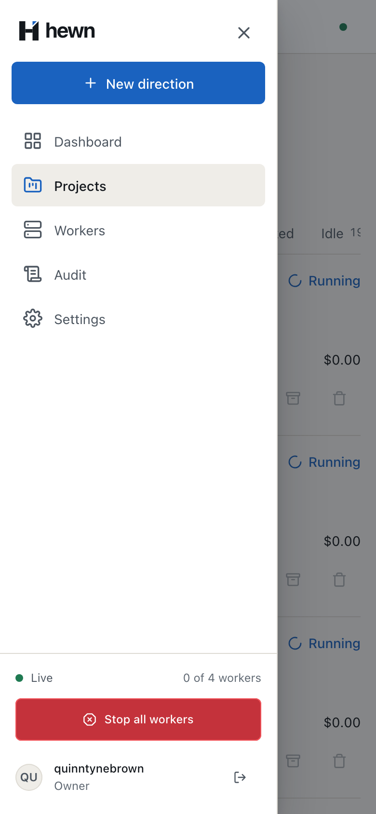
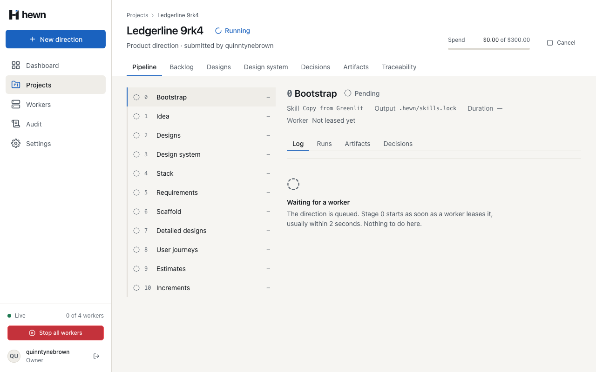
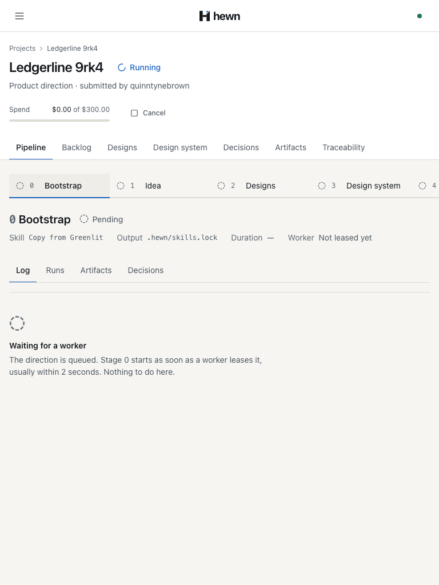
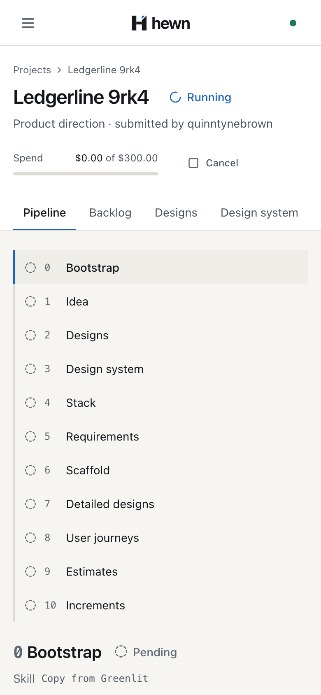
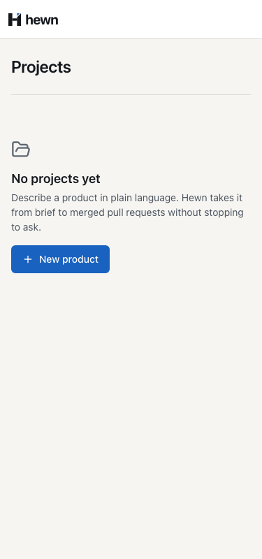
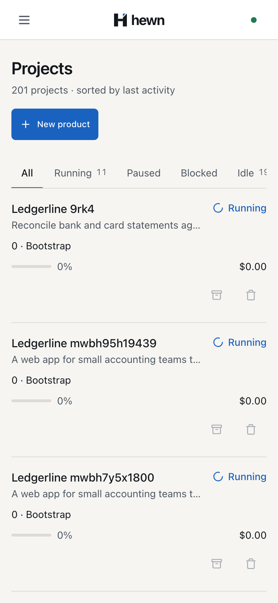
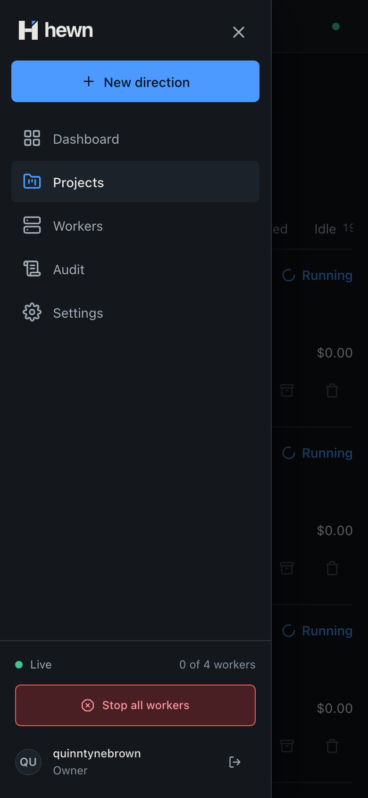
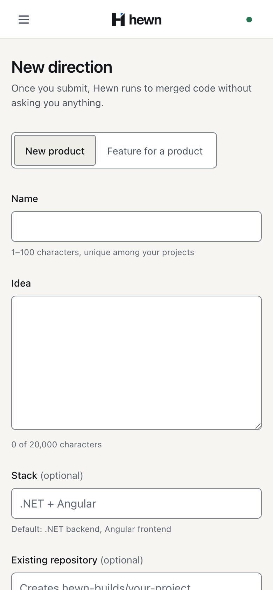
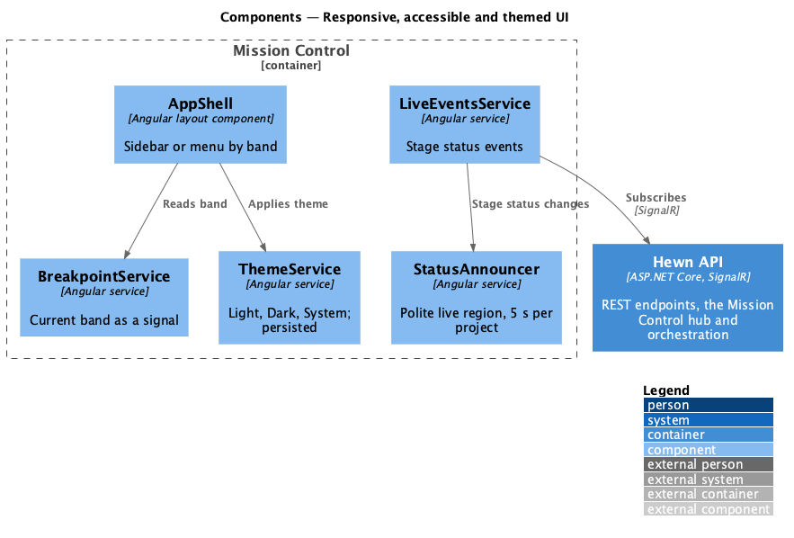

Every page from 320 to 2560 px, with a menu drawer on phones and tablets.







- …then there is no horizontal page scroll, and - touch targets are at least 44×44 px. + …then there is no horizontal page scroll, and touch targets are + at least 44×44 px below 992 px and at least 24×24 px from 992 px.
--control-height-sm: 2.75rem;
--control-height-md: 2.75rem;
--control-height-lg: 3rem;
…
@media (min-width: 62rem) {
:root {
--layout-columns: 12;
--layout-margin: var(--space-8);
--control-height-sm: 2rem;
--control-height-md: 2.5rem;
}
}

<aside class="shell__sidebar" aria-label="Sidebar">
<ng-container *ngTemplateOutlet="sidebar; context: { $implicit: false }" />
</aside>
<ng-template #menu>
<div class="drawer">
<button
class="btn btn--ghost btn--icon btn--touch drawer__close"
type="button"
aria-label="Close menu"
(click)="closeMenu()"
>
<svg hw-icon name="close" class="icon--lg"></svg>
</button>
<ng-container *ngTemplateOutlet="sidebar; context: { $implicit: true }" />
</div>
</ng-template>
protected openMenu(): void {
if (this.menuRef) return;
this.menuRef = this.dialog.open(this.menu(), {
ariaLabel: 'Menu',
ariaModal: true,
panelClass: 'drawer-pane',
backdropClass: 'backdrop',
autoFocus: 'first-tabbable',
});
this.menuRef.closed.subscribe(() => (this.menuRef = null));
}
// The sidebar replaces the drawer from 992 px (L2-046 AC3).
const wide = matchMedia('(min-width: 62rem)');
const onWide = (e: MediaQueryListEvent) => e.matches && this.closeMenu();
wide.addEventListener('change', onWide);

await expect(nav.sidebar).toBeHidden();
await expect(nav.menuButton).toBeVisible();
await nav.menuButton.click();
await expect(nav.closeMenu).toBeFocused();
// Focus stays in the drawer.
for (let i = 0; i < 12; i++) await page.keyboard.press('Tab');
expect(await nav.drawer.evaluate((d) => d.contains(document.activeElement))).toBe(true);
await page.keyboard.press('Escape');
await expect(nav.menuButton).toBeFocused();
for (const width of widths) {
await nav.width(width);
for (const path of pages(id)) {
await nav.visit(path);
const scroll = await nav.horizontalScroll();
if (scroll > 0) overflowing.push(`${path} at ${width} px scrolls ${scroll} px`);
}
}
[5/6] … no page scrolls sideways at any width from 320 to 2560 px Width sweep: 91 pages and widths, 0 scroll 6 passed (1.3m)
- Array [] + Array [ + "/projects at 375 px: All (41×44)", + "/projects/new at 375 px: Start direction (151×40)", + "/workers at 375 px: New worker token (150×32)", + "/settings at 375 px: Remove grace (70×32)", … (66 in all) + "/projects at 375 px: Running 7 is squeezed (44 of 55)",